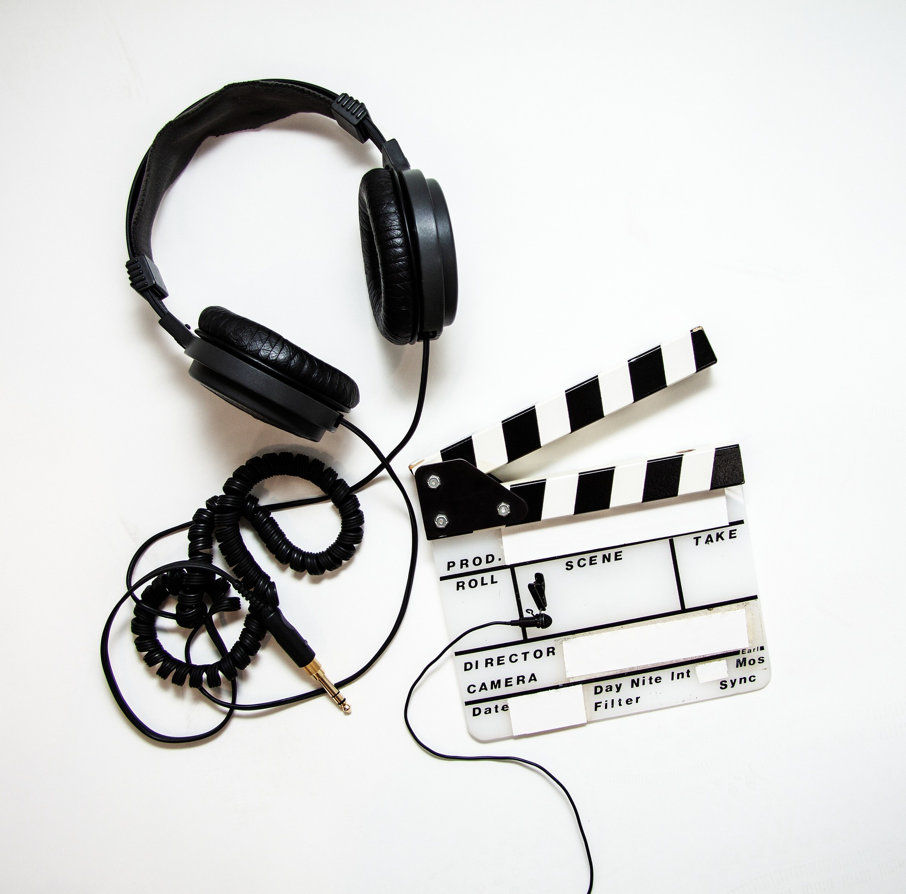
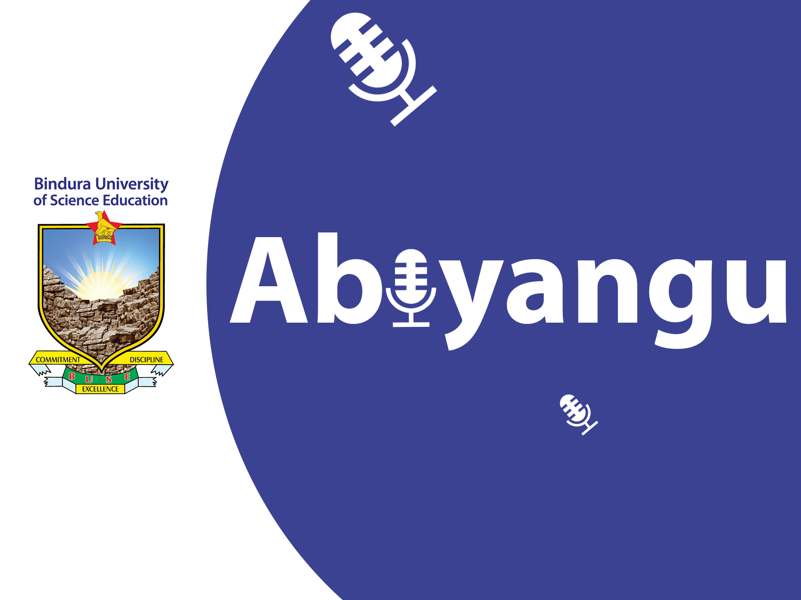

BUSE ORIGINAL
THE
CAMPUS
MIC. STUDENT STORIES • EP 01
CAMPUS
MIC. STUDENT STORIES • EP 01
The Campus Mic
Student voices, campus experiences and the stories between lectures.
Campus, culture & conversation
Student voices, campus experiences and the stories between lectures.
Fresh perspectives from researchers, creatives and changemakers.
Music, identity and the creative energy of our community.
Make room for the conversations, music and campus updates that keep you in the know.
Tune in now ↗Start your day with campus news and what's happening around Bindura.
Conversations, guest voices and the topics students are talking about.
A soundtrack for your afternoon, from familiar favourites to new finds.
Thoughtful conversations and stories to take with you after campus.
The personalities behind your favourite Abiyangu shows.
The Morning Brief

Campus Connect

The Afternoon Mix
After Class
The Culture Frequency

Beyond the Lecture